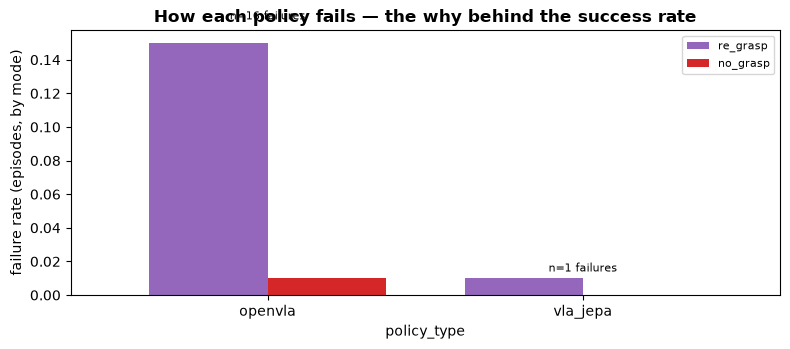
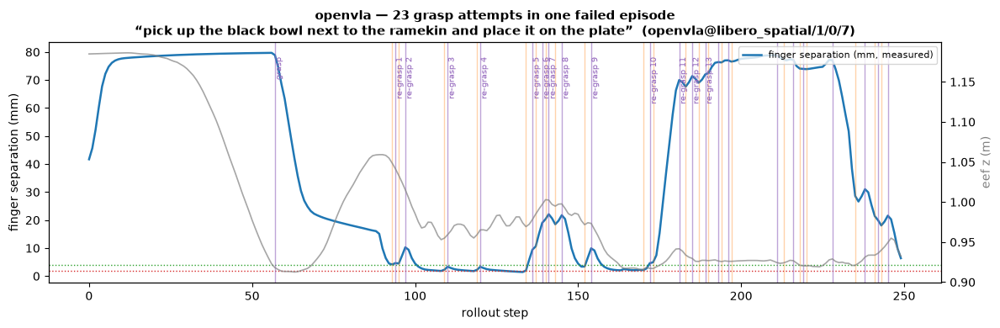

Operational reproducibility: benchmarking modern VLAs in one Python environment¶
Running VLA-JEPA and OpenVLA on LIBERO, on rented GPUs, in one modern Python stack — and finding the bugs with DataFrame queries instead of afternoons of scrubbing video.
Python's promise is that it can act as a high-level interface across many performance stacks: distributed computing, neural network training, simulation, visualization, robotics, and more. In practice, Python packaging often becomes one of the biggest sources of friction, especially for developers working inside narrow research ecosystems.
This problem is particularly visible in academic AI and robotics repositories. Implementations of new papers, model architectures, and benchmarks frequently ship with strict dependency pins, outdated libraries, and fragile environment assumptions. Those choices may make sense at publication time, but they often create unnecessary complexity for anyone trying to integrate the work into a broader system. Industry practitioners do not usually have the luxury of treating each paper repository as its own isolated world. They need coherent stacks that can be deployed, scaled, tested, and maintained.
I spent several weekends investigating whether the dependency constraints around VLA, JEPA, LIBERO, MuJoCo, and robosuite were genuinely necessary, or whether they were mostly artifacts of how the original research code was packaged. My conclusion is that much of the pain is avoidable. I was able to run VLA and JEPA models on LIBERO, with MuJoCo and robosuite, inside a single modern Python environment using current tooling and dependencies. The same environment also scales cleanly on Modal.
That matters because the reproducibility problem in AI is not only about random seeds, missing checkpoints, or insufficient documentation. It is also about developer workflow. When research code depends on brittle, outdated, or mutually incompatible environments, it becomes harder to compare methods, extend baselines, reproduce benchmarks, and transition promising work into real systems.
Modern AI models are now strong enough to assist with refactoring, debugging, dependency upgrades, and regression comparison. Given that, it is increasingly difficult to justify publishing repositories that rely on unnecessarily strict, stale dependency pins without providing a maintainable path forward. Researchers should still preserve exact environments for archival reproducibility, but that should not preclude offering a modern, integrated environment for actual development.
I created this repository to make it easier to run benchmarks on new robotics models. Vision-language-action models, world models, and action-conditioned models are being explored across robotic manipulation, humanoids, autonomous vehicles, and other physical AI systems. The goal of this project is to give researchers and practitioners a coherent toolset for evaluating these systems without inheriting the full fragmentation cost of the current Python packaging ecosystem.
What follows is the receipt: what the consolidation actually took, what it found, and why "one environment" is only half the story — because once the environment is honest, the data it produces can tell you things a success rate never will.
The receipt: our VLA scored 0% and the model was innocent¶
OpenVLA's published number on LIBERO-Spatial is 84.7%.
Our first sweep scored 0 for 7. Every episode ran to the 250-step cap and died. No exception, no warning. The robot moved like it meant it — approach, descend, close, lift, nothing. Plausible-looking failure, two hundred and fifty steps at a time.
The usual next move is to pour a coffee and start scrubbing rollout videos. We didn't have to, because our harness writes every rollout to parquet — one row per step, with the commanded action and the measured gripper state on every row. So instead of watching robots fail in real time, we asked the data:
The hand could never open.
OpenVLA's predict_action returns actions in the RLDS convention: gripper in [0, 1], where ~1
means open. LIBERO's controller wants [-1, +1], where -1 means open. Fed raw, the command is
never negative — so the gripper physically cannot open — and the polarity is backwards on top.
The model was innocent. The harness was lying to it.
The fix is three lines, and it's not even novel — it's exactly what OpenVLA's own eval utils do (normalize [0,1] → [-1,1], binarize, invert). After the fix: 10/10 on task 0, episodes finishing in ~80 steps instead of capping out at 250.
One query. That's the post, really. Everything below is the receipts.
This is everyone's Tuesday¶
If you work on VLAs, some version of this has happened to you, because the entire genre of VLA evaluation fails this way:
- There's a starVLA issue where someone gets 0.00 across 24 tasks with the official
checkpoint and the official README. The cause: one missing
unnorm_key. - A researcher reports that a mere HuggingFace processor warning makes their "success rate drop dramatically."
- There's a LIBERO issue where the target bowl teleports during env init. Tasks fail and the policy never had a chance.
- openpi and starVLA both ship loud TRAIN/TEST CONSISTENCY banners in their client code — because eval-time preprocessing has to byte-match training, and when it doesn't, nothing raises. Your success rate just quietly isn't real.
We mapped the eval stacks of openpi, starVLA, OpenVLA, LeRobot, and AllenAI's
vla-evaluation-harness against each other (the full grammar is in
docs/EVAL_PATTERNS.md). Every one of them decomposes into the same nine
components — checkpoint, normalization stats, policy wrapper, serving split, env construction,
chunk handling, success criterion, trials and seeds, recording. And the failure mode of the
whole genre is the same: plumbing errors masquerade as model quality. One scalar out, no
forensics.
You can't grep a success rate.
So we made the eval explain itself¶
We built a harness with two jobs.
Job one: reproduce. Run VLA-JEPA and OpenVLA on LIBERO, on your own GPU, with the
canonical protocol (50 trials per task, seed 7 — the constants OpenVLA's eval established and
everyone else inherited). Each policy runs in one Python process: policy, simulator, and
data capture together. No policy server, no WebSocket, no cloning four repos. The ecosystem's
server-client split exists for real robots and dependency conflicts — neither applies to sim
eval in a container, so we deleted the socket. VLA-JEPA loads through its LeRobot port
(lerobot/VLA-JEPA-LIBERO), LIBERO comes from the hf-libero wheel, and the whole thing runs
as a Daft UDF on a Modal GPU: episode specs go in as DataFrame rows,
parquet comes out.
Job two: understand. Every rollout streams to a canonical schema — one row per step, commanded action, measured gripper separation, end-effector pose, success, a path to the mp4. That's the layer none of the five frameworks record, and it's the difference between "the number dropped" and knowing why. When our 0% happened, the diagnosis was a filter and two aggregations:
What the comparison actually found¶
With the harness honest, we ran both policies on LIBERO-Spatial: 10 tasks × 10 trials each, seed 7, 200 episodes total.
| success rate | failures | |
|---|---|---|
| VLA-JEPA | 99/100 | 1 |
| OpenVLA | 84/100 | 16 |
Two things about that table.
First: OpenVLA's 84% lands within a point of its published 84.7% — from our code, on rented GPUs, an hour after that same pipeline was scoring zero. Reproduction isn't a vibe; it's a number you can hit.
Second: the table is still just success rates, and success rates don't tell you what to fix. The per-step data does. We labeled every failure from three columns — commanded gripper cycles, measured finger separation, end-effector height — and the picture is one-sided:
OpenVLA fails 16× more often than VLA-JEPA (16% vs 1%) — and 15 of its 16 failures are the same failure: a re-grasp fumble loop.

The hero episode makes it visceral. "Pick up the black bowl next to the ramekin and place it on the plate": OpenVLA commands 23 grasp attempts in one episode. The finger-separation trace shows the whole story — fingers snap shut to ~2mm (that's the width of air, not a bowl), open, reposition, snap shut on air again, twenty-some times until the clock runs out. We never watched the video to learn this. The trace is the video, minus the waiting.

(VLA-JEPA's single failure across 100 episodes? Also a fumble loop. When strong policies fail, they apparently fail the same way — a hypothesis we now get to test on more suites.)
That's the actionable difference between 99% and 84%: not "be better," but this policy loses objects on the regrasp and can't recover. That's a data-curation target and a fine-tuning target, not a shrug.
The field guide: 20 landmines, so you don't step on them¶
We logged every failure we hit getting this running cleanly — because getting it running
cleanly was the point. The condensed field guide is
FRICTION_POINTS.md (symptom → fix), the
chronological story is FRICTION_LOG.md, and the
deep detail is NOTES.md. The highlights:
Environment and build. LIBERO's famous "dependency conflict" is a myth — its setup.py
installs nothing; the scary requirements.txt is for training, not rollouts. CUDA runtime
images ship no compiler and no cmake (ask evdev and egl_probe how that goes). LIBERO
prompts for interactive input on first import — it EOFErrors inside a container, and yes,
that survived into the packaged wheel.
Silent success-rate killers. The RLDS↔LIBERO gripper convention (the 0% above). Skipping
center-crop when the checkpoint trained with crop augmentation. unnorm_key for the LIBERO
fine-tunes is the suite name, not the dataset name the docs suggest. numpy 2 sneaking in
through a dependency bump and breaking torch 2.2. Images that must be float [0,1] because a
processor downstream sets do_rescale=False — feed it 0-255 and nothing raises, ever.
Sweep killers. env.reset() every episode: restoring init state alone leaves robosuite's
internal step counter running across episodes, and around cumulative step 1000 the env
poisons itself and every episode after — invisible in short runs, fatal in sweeps. (openpi's
loop resets every episode. Now we know why.) The 180° de-rotated image view breaks
torch.from_numpy — negative strides. And a bonus from the analysis side: episode_id names
the episode spec, so two policies produce the same id — group by policy too, or you'll
chimera two trajectories into one 500-step phantom in a 250-step suite. Ours got caught
because 500 > 250. Yours might not.
None of these raise. All of them read as "the model is bad."
Run it on your data¶
Everything above is one repo: the harness, the executed notebook with the figures, the eval grammar, and the full landmine log.
modal run harness/rollout/modal_app.py --policy-type openvla --suites libero_spatial --episodes 10
modal run harness/rollout/modal_vla_jepa_app.py --suites libero_spatial --episodes 10
# then: notebooks/failure_modes.ipynb over data/rollouts/
The notebook doesn't care where the parquet came from. The same schema ingests DROID, LeRobot, robomimic HDF5, ALOHA, EgoDex, and ABC — so if you've got demonstrations or rollouts in any of those, the failure forensics run on your data with a path change. If you try it, we genuinely want to hear what breaks: the landmine log grows by contribution.
The longer-term goal is to add more models, more simulation environments, and more benchmark suites so that the robotics community can iterate faster. Strong tooling will not solve the hard parts of physical AI by itself, but it can remove a large amount of unnecessary drag. Teams should be spending their engineering effort on the self-improvement loop, hardware constraints, control design, evaluation quality, and deployment — not on rebuilding incompatible Python environments for every paper they want to test.
A direct ask, if you do this work¶
If you evaluate VLAs — or you've burned a weekend rebuilding someone's environment to run one — I want fifteen minutes of your candor. What broke? What does your eval record that ours doesn't? What would make you actually run this on your own data?
Open an issue with what broke or what's missing, or reach me directly — ekleven@vangelis.tech — and I'll personally help you get your benchmark running. If this repo can genuinely remove drag for your lab, that's the whole point of having built it in the open.
We're Eventual, we build Daft, and we're building data tooling for physical AI. If success rates are hiding your failures too — come find us.